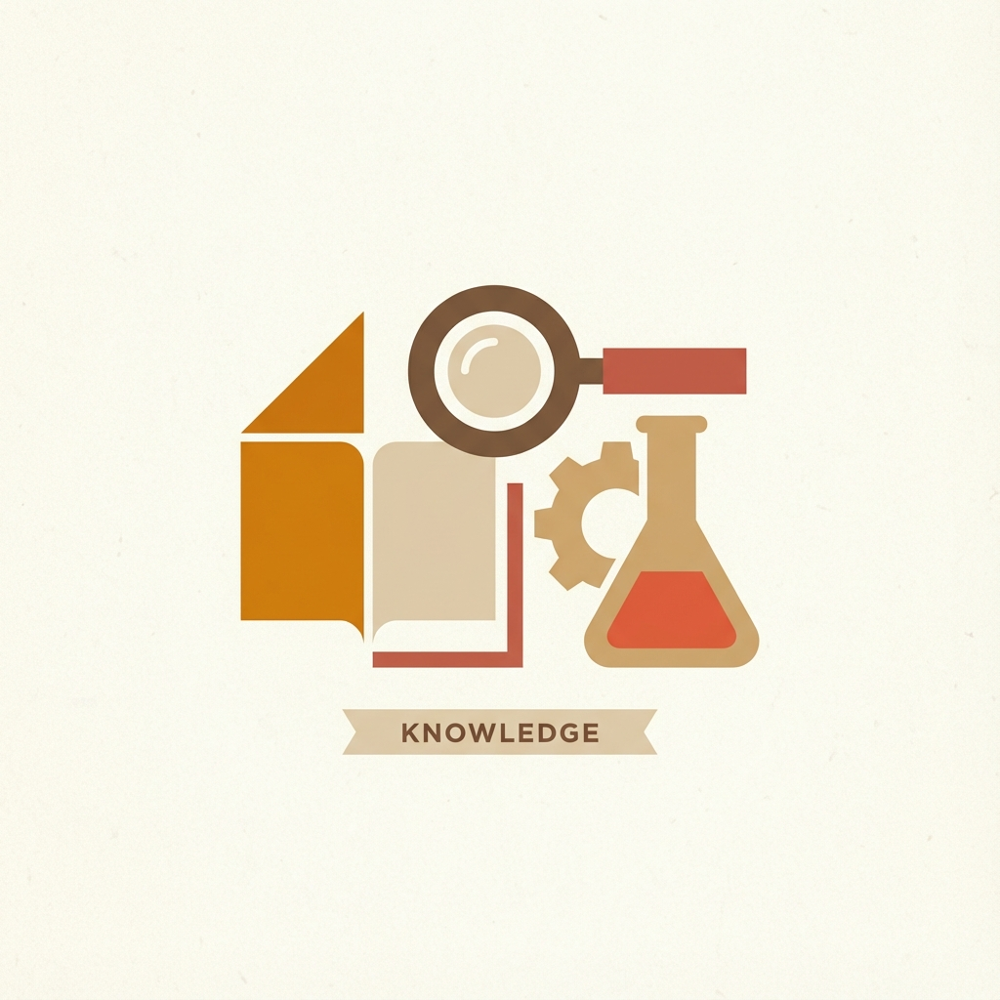
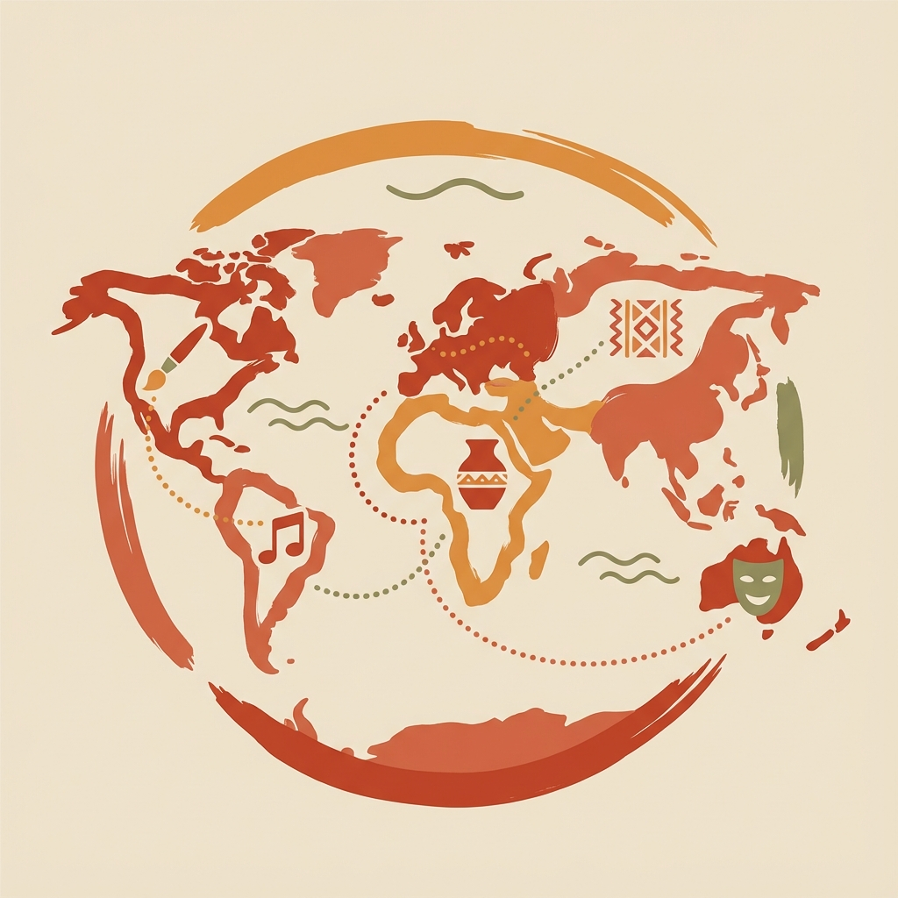
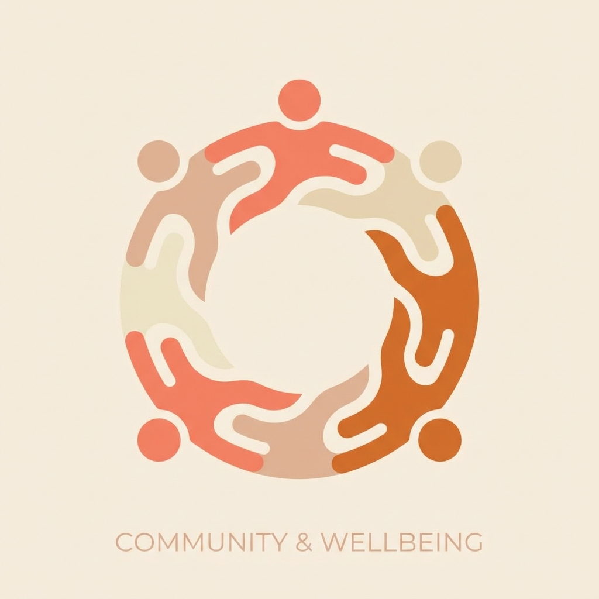

子ども
Children
身体を通して世界を知っていく時期。まだ能力として測られる前の身体がある。
Beyond data, beyond objectivity—
Rediscovering what true health means.
Why Embodiment Matters Now
人工知能が知的労働を代替し、情報が溢れる現代。
だからこそ、代替不可能な「身体」の価値が際立ちます。
感じること、動くこと、呼吸すること——
この「今ここにある」身体感覚こそが、
私たちの存在の根源です。
理学療法や運動科学が積み上げてきた根拠と、
文化や芸術が扱ってきた感覚の領域。
そのどちらか一方だけでは、身体は捉えきれません。
測ることと、感じること。
両方を手放さない健康観を探しています。
「Utopia(どこにもない理想郷)」ではなく、
「Eutopia(良き場所)」を、今ここに。
ただしそれは、完成された理想を描いて手渡すことではありません。
身体をめぐる価値の対立を引き受けながら、
より良い状態へ更新し続けること。
この場所は、完成しないことを前提にしています。
Where We Stand
科学を使う。 しかし、科学に人間を還元しない。
専門性を使う。 しかし、専門家が人を支配しない。
テクノロジーを使う。 しかし、テクノロジーに身体を従属させない。
自由を求める。 しかし、孤立ではなく共同体へ向かう。
身体をより良くする。 しかし、「正しい身体」を一つに決めない。
Who This Is With
身体のユートピアは、特定の誰かのための構想ではありません。
子ども、働く世代、高齢者、そして動物。
生きられる身体を持つ存在は、すべてこの共同体の一員です。
ここに序列はありません。
市場での価値の大きさで並べ替えられることもありません。
身体を通して世界を知っていく時期。まだ能力として測られる前の身体がある。
一日の多くを、身体を手段として過ごす時期。効率と身体のあいだに緊張が生まれやすい。
できることが変化していく時期。正常値に戻すことより、何を選べるかが問われる。
それ自身に、生きられる身体を持つ存在として。
この四者は、事業の対象として並べられているのではありません。
市場の論理だけでは支えきれない領域があり、
そこを専門性によって支えることも、この構想の一部です。
Structure
この構想は、三つの層でできています。
社会像と、実践者と、そのあいだをつなぐ組織です。
身体を管理する社会ではなく、身体を通して自由に生きられる社会を考える構想。
制度と生活世界を越境し、制度の光が届きにくい一隅へ自ら移動する実践者。
全体を統括するのではなく、あいだに立ち、関係をつなぎ直し、そこで生まれた知を循環させる媒介者。
Three Pillars of Practice

エビデンスに基づいた身体の理解を深め、
専門家・一般の方々へ向けた教育活動を展開。
学術研究と臨床実践の架け橋となり、
科学的知見を社会に還元します。

日本文化に根ざした健康観を再認識するとともに、
世界各国の文化に合わせた健康観を理解。
量的アプローチだけでなく、質的な探求を深めるため、
アートの要素も取り入れていきます。

個人の健康から社会のウェルビーイングへ。
コミュニティづくり、企業支援、
社会課題への取り組みを通じて、
誰もが自分の身体で居られる環境をつくります。
Physical Thinker
「フィジカルシンカー」とは、身体を通じて思考する人のこと。
頭だけで考えるのではなく、身体感覚を起点に世界を捉え直す。
動くこと、感じること、触れることから生まれる知恵——
それは、AI時代においてこそ価値を持つ、
人間固有の思考のあり方です。
Corporate Physio Theory
「事業身体論（Corporate Physio Theory）」とは、
セラピストの身体観・運動観を事業・組織・経営に応用する思想フレームワーク。
身体が自己調整し、環境と相互作用しながら機能を発揮するように、
組織もまた生きた身体として捉え直す——
硬直した戦略論を超えた、新しい事業のあり方を探求します。
About
身体のユートピア（Embodied Eutopia）は、
株式会社HILUCOが運営する構想です。
HILUCOは、ヘルスケア・ウェルビーイング領域で、
研究、事業開発、企業支援に取り組んでいます。
プロフィール
理学療法士 / JSPO-AT
Ph.D. (人間健康科学)
株式会社HILUCO 代表取締役
科学的バックグラウンドを持ちながら、
スポーツ、文化、アート、ビジネスなど
多岐にわたる領域で活動する実践者。
「身体」を軸に、エビデンスと感性、
東洋と西洋、伝統と革新——
様々な境界を超えて、人間の可能性を探求し続けています。
身体のユートピアという構想、
フリーランスセラピストという実践、
株式会社HILUCOという事業。
その三つの立場を行き来しながら、それぞれを育てています。